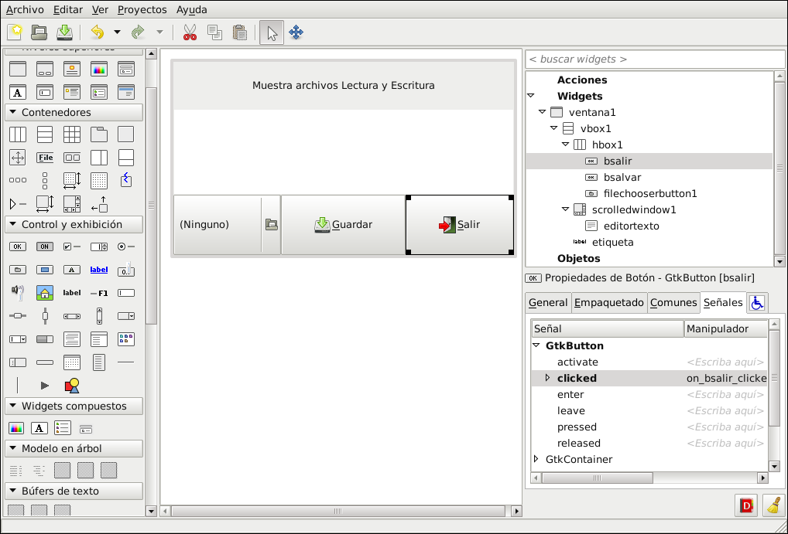
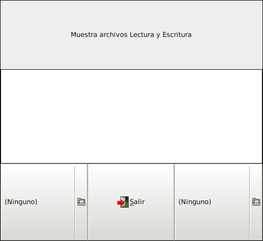
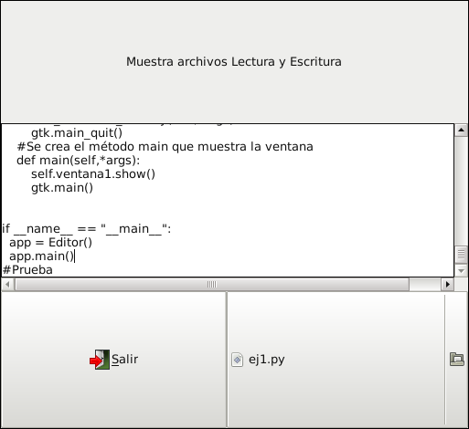

Desarrollo de aplicaciones gráficas con python+gtk+glade. Parte 6. Editor de Texto
Posted on jue 08 octubre 2009 in Tutorial Python • 2 min read
En el tutorial anterior se mostró como abrir un archivo, mostrar el contenido en el widget textview, ahora se agrega la posibilidad de editar y guardar el archivo.
En la figura se muestra el diseño en glade. 
#!/usr/bin/env python
# -*- coding: utf-8 -*-
#Importación de módulos
import pygtk
pygtk.require('2.0')
import gtk, gtk.glade, inspect, sys
import string
#Creación de la clase ej1
class Editor:
#Creación del método constructor de la clase.
def __init__(self):
#Se captura el archivo xml de la interfaz
self.w_tree = gtk.glade.XML('ej1.glade')
#Se asocia la ventana1
self.ventana1 = self.w_tree.get_widget('ventana1')
#Se asocia el widget textview1
self.textview1 = self.w_tree.get_widget('editortexto')
#Se asocia el widget de la selección de archivo
self.seleccionararchivo = self.w_tree.get_widget('filechooserbutton1')
#Se asocia el widget de la selección de archivo
self.seleccionararchivo2 = self.w_tree.get_widget('filechooserbutton2')
#Se asocia el boton salir
self.botonsalir = self.w_tree.get_widget('bsalir')
#Se asocia los eventos con las señales
self.w_tree.signal_autoconnect(dict(inspect.getmembers(self)))
#Se asocia el objeto buffer de texto
self.buffertexto = gtk.TextBuffer()
#Se crea una lista vacía
self.lista = []
#Se crea la variable que contendrá el nombre del archivo seleccionado
self.archivo_name = ""
#Se asigna un título a la ventana
self.ventana1.set_title("Editor de texto")
#Se crea el método de selección de archivo
def on_filechooserbutton1_file_set(self,*args):
#Se captura el nombre del archivo en la variable
self.archivo_name = self.seleccionararchivo.get_filename()
#Se abre el archivo colocando su contenido en una lista
self.lista = open(self.archivo_name,"r").readlines()
#Se recorre la lista y se coloca el contenido en el buffer de texto
for i in range(len(self.lista)):
self.buffertexto.insert_at_cursor(self.lista[i])
#Se coloca el contenido del buffer en el textview
self.textview1.set_buffer(self.buffertexto)
#Se oculta la ventana de selección de archivo
self.seleccionararchivo.hide()
#Se crea el método para el boton salir
def on_filechooserbutton2_file_set(self,*args):
#Se captura el nombre del archivo en la variable
self.archivo_name2 = self.seleccionararchivo2.get_filename()
#Se captura el inicio y fin del buffer del textview
startiter, enditer = self.buffertexto.get_bounds()
#Se abre el archivo en modo escritura
archivo = open(self.archivo_name2,"w")
#Se escribe la información en el objeto archivo , tomando el texto del buffer
archivo.writelines(self.buffertexto.get_text(startiter,enditer))
#Se cierra el archivo
archivo.close()
#Salir
def on_bsalir_clicked(self,*args):
gtk.main_quit()
#Se crea el método para cerrar la aplicación
def on_ventana1_destroy(self,*args):
gtk.main_quit()
#Se crea el método main que muestra la ventana
def main(self,*args):
self.ventana1.show()
gtk.main()
if __name__ == "__main__":
app = Editor()
app.main()
La siguiente figura muestra la aplicación ejecutandose: 
En la siguiente figura se muestra el contenido del archivo en el editor con posibiliad de editar: 
===
¡Haz tu donativo! Si te gustó el artículo puedes realizar un donativo con Bitcoin (BTC) usando la billetera digital de tu preferencia a la siguiente dirección: 17MtNybhdkA9GV3UNS6BTwPcuhjXoPrSzV
O Escaneando el código QR desde billetera: